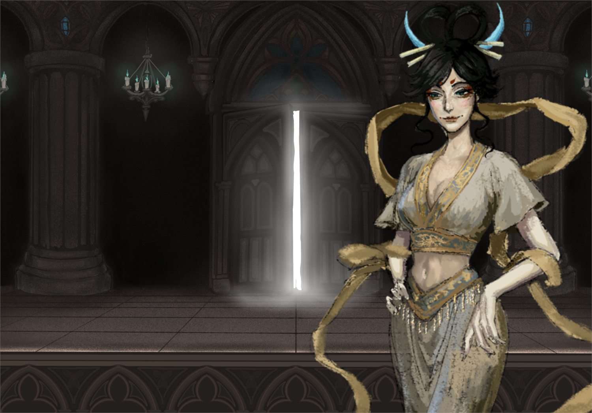
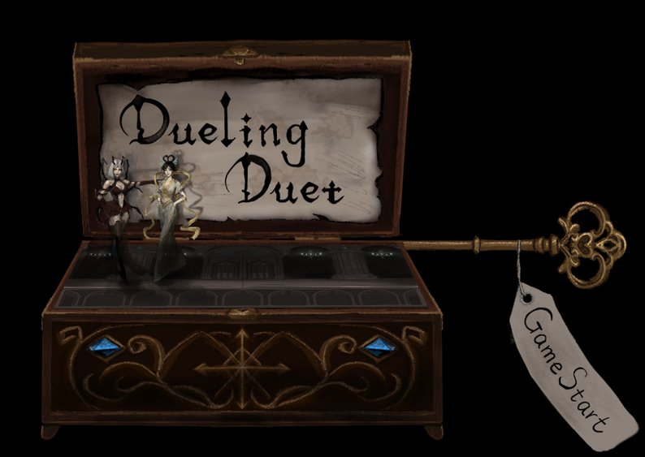
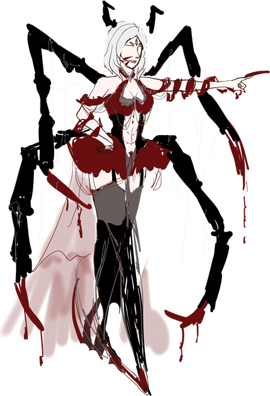
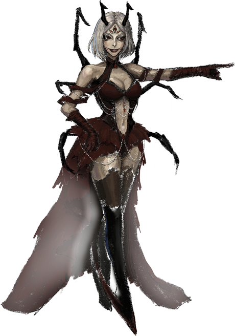
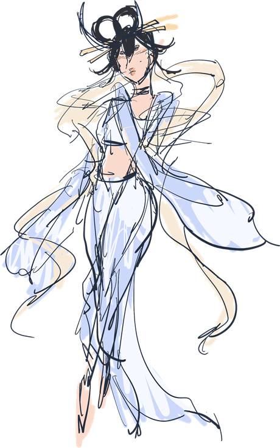
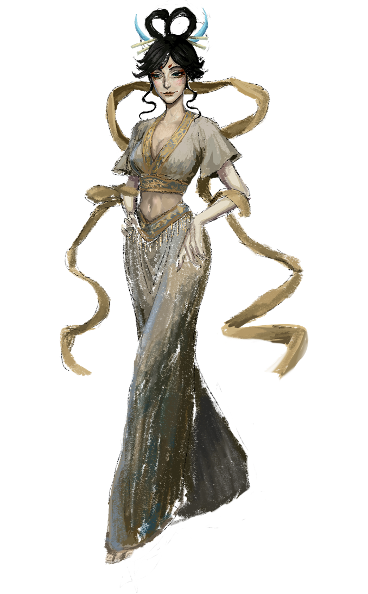
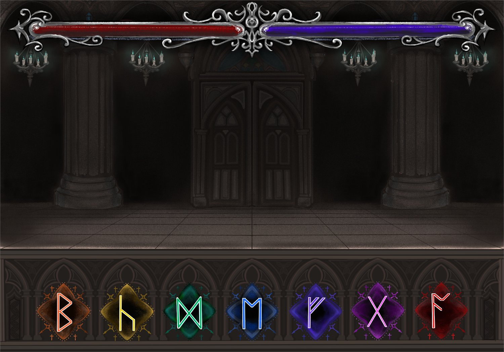
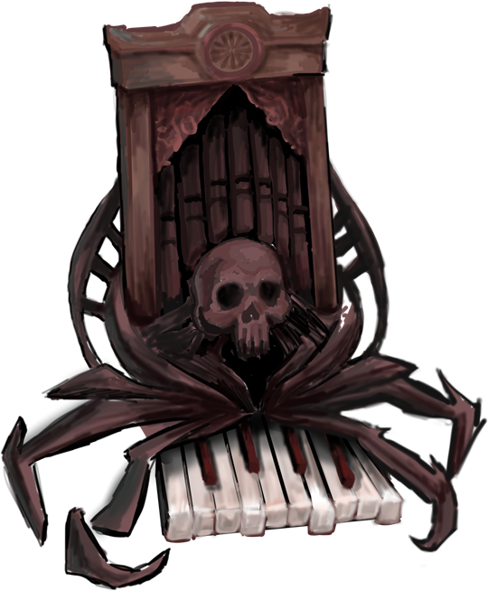
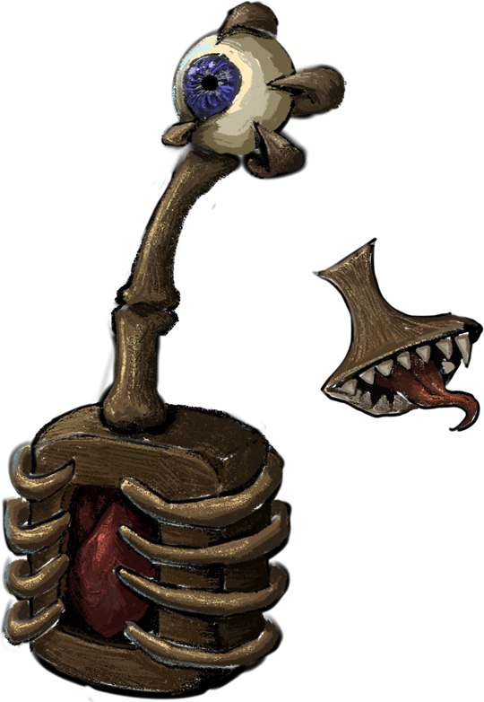

Selected Game
Dueling Duet
Two duellists drawn from opposite mythologies, two instruments rebuilt as living monsters, and an opening that works like a music box you wind and open.

Overview
I took each instrument apart and turned its structure into organs, so the thing you play is alive.
This one is art-led rather than a systems case study. My work was character design, art direction, the instrument-monster design, the Gothic letterforms, and the opening animation.
The brief I set myself was that the two sides of the duel should be legible before anyone plays a note, in silhouette, in ornament, and in the shape of the instrument each one carries.

Victory art for the Eastern duellist. Each character has her own, staged in the same hall from the same camera so the two read as a matched pair.
The music-box opening
I imagined and designed the opening scene myself, and I hand-animated it myself rather than scripting it.
It works like a music box. The player inserts a winding key, turns it, and the box opens to reveal the scene inside, and that scene is the duelling hall. Framing the whole game as something that happens inside a wound-up box does two things at once: it makes the music literal rather than decorative, and it makes the duellists into figurines, which is exactly the register the character art is pitched at.

The box open on the title screen, with the winding key still in it. The two duellists are the figurines inside.
Two characters, two mythologies
The pair is deliberately contrasted. One is built from Western fantasy: sharp, armoured, red and black, with a jagged winged silhouette. The other is built from Eastern mythology: flowing, layered, gold and cream, with long ribbons that draw curves instead of points.
Reading the two next to each other should tell you how each one fights before the game explains it.
Western fantasy


Eastern mythology


Sketch to final for both duellists. The silhouette decisions are made in the sketch pass; the final art only resolves material and colour.
Gothic letterforms

The typography is Gothic in the letterform sense, not the fashion sense. I do not mean lolita-goth styling as visual shorthand; I mean a specific ornamental, structural, line-based construction, with letters built from strokes and joints, closer to blackletter and to carved rune-forms than to a typeface picked from a list.
That choice ties the interface to the architecture. The hall the duel takes place in is all pointed arches and vertical structure, and the letters are drawn with the same logic, so the HUD reads as part of the building rather than as an overlay on top of it.
The instruments are monsters
The two instruments are designed as creatures rather than props. I deconstructed the structure of each real instrument and transformed its parts into living organs, so they read as animate.
The pipe organ keeps its rank of pipes and its keyboard, but the case becomes a ribcage around a skull and the base splits into limbs. The shamisen keeps its long neck and its skinned body, except the tuning peg becomes an eye, the body opens into an exposed ribcage, and the plectrum becomes a separate toothed mouth.
The rule I held to in both cases: no part is added for horror. Every organ has to be a real part of the instrument, reinterpreted. The unease comes from recognising the instrument, not from decoration.


Teaser
Hosted on YouTube. Nothing loads from YouTube until you press play.